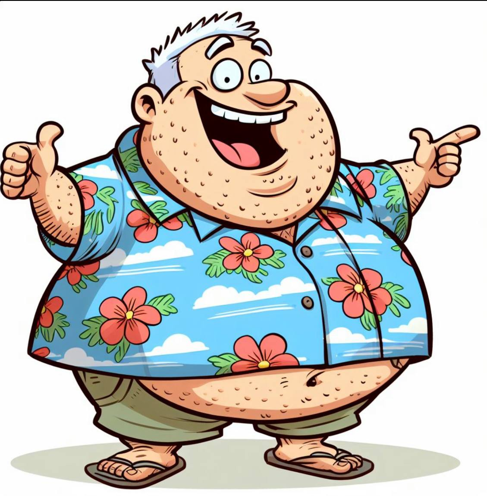

Meet TR
Tubby Retard (TR) is a fictional character — a satirical embodiment of every terrible yacht owner story you've ever heard (and probably a few you haven't).
With his signature Hawaiian shirt, flip-flops, and permanent sunburn, TR bounces around the world's marinas leaving chaos in his wake. He treats crew like disposable furniture, ignores safety protocols he doesn't understand, and somehow always blames everyone else when things go wrong.
Why TR Exists
This web comic was created as a creative outlet for yacht crew members who've experienced the... let's call them "unique personalities" that sometimes come with the territory.
By fictionalizing these stories through TR, crew can:
- Share experiences without violating NDAs
- Find humor in difficult situations
- Connect with others who've been there
- Highlight the importance of good yacht management
⚓ TR's Yachting Credentials
- Boat License: "I watched a YouTube video once"
- Navigation Skills: GPS voice is his best friend
- Crew Management: Yells louder when things break
- Safety Record: "That's what insurance is for!"
- Favorite Marina: The one with the cheapest fuel
- Relationship with Immigration: "Complicated"
The Real Story
Every comic strip is based on anonymous submissions from actual yacht crew members. While TR is fictional, the situations he finds himself in are all too real.
We respect the privacy and NDAs of all contributors. Names are changed, details are exaggerated for comedic effect, but the core experiences? Those are genuine.
Got a TR story of your own? Submit it here and see it brought to life!
Follow TR's Adventures
Get the latest comics and share your own TR encounters: